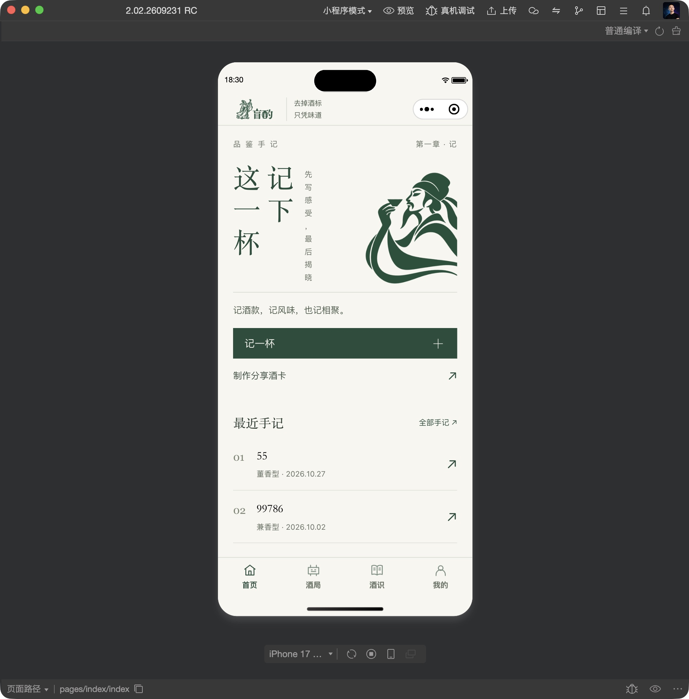
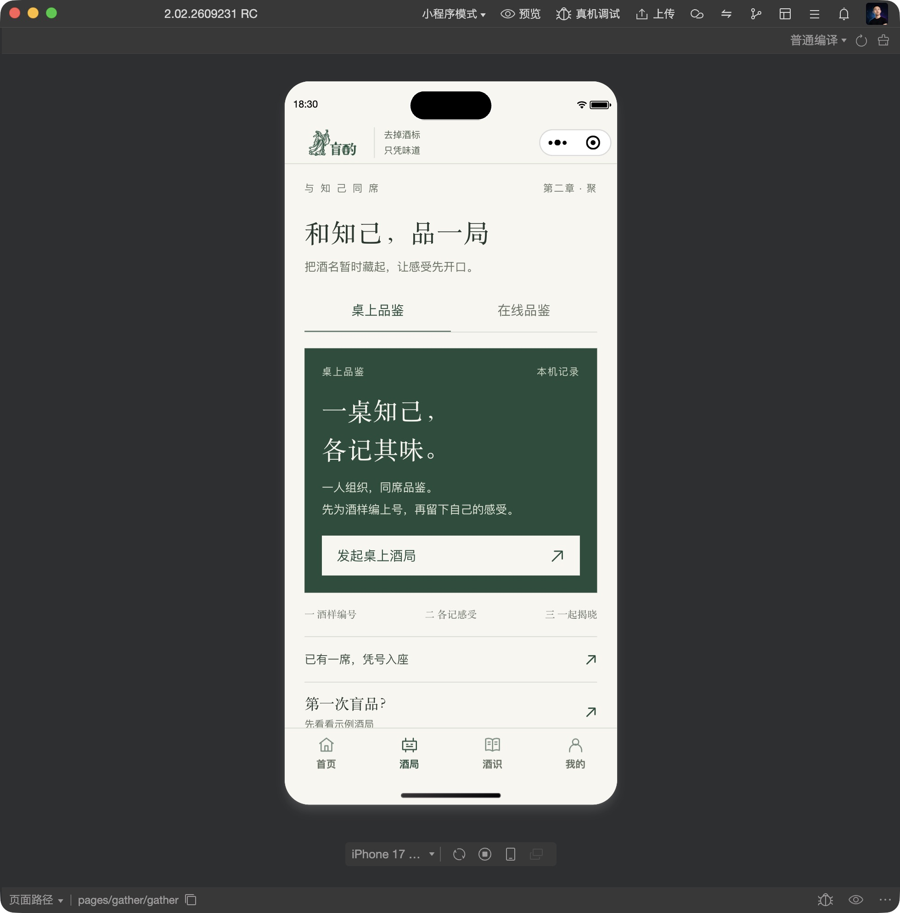
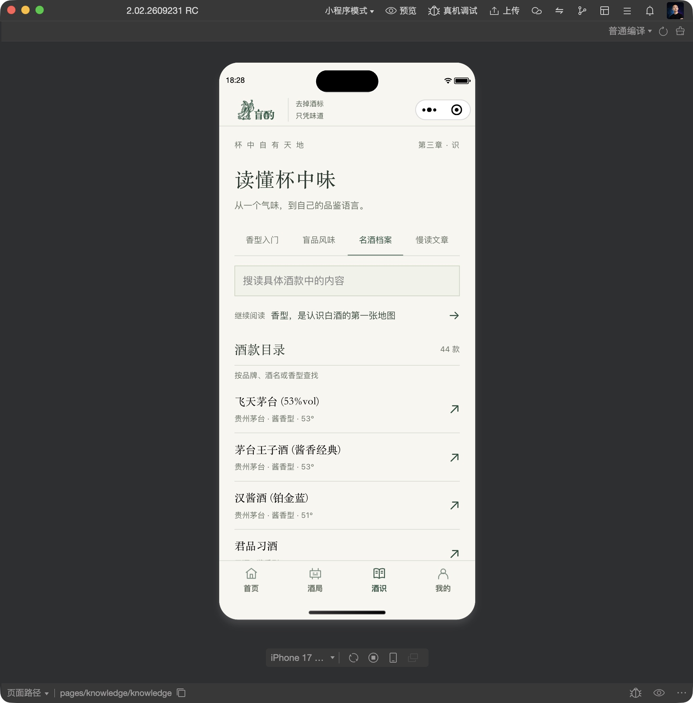
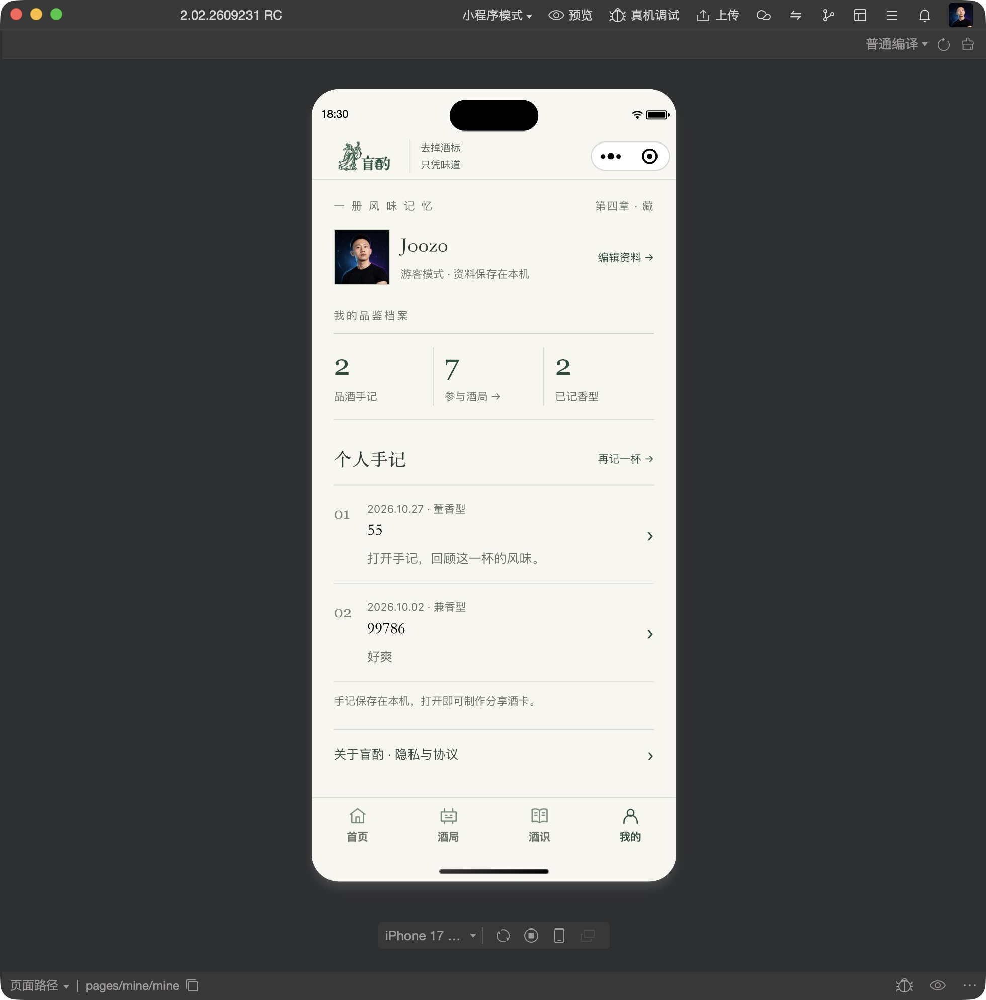

竹影手札，落在这一杯。
微信开发者工具模拟器实拍 · 原有手记、身份与酒局继续使用
2026.11.04
四个主页面与通用导航
46 项检查通过WXML / WXSS 编译通过真实目录 44 款已加载尚未发布上线
首页 · 记

查看完整模拟器截图 ↗
酒局 · 聚

查看完整模拟器截图 ↗
酒识 · 识

查看完整模拟器截图 ↗ · 酒款详情 ↗
我的 · 藏

查看完整模拟器截图 ↗
微信开发者工具模拟器实拍 · 原有手记、身份与酒局继续使用
2026.11.04
四个主页面与通用导航



